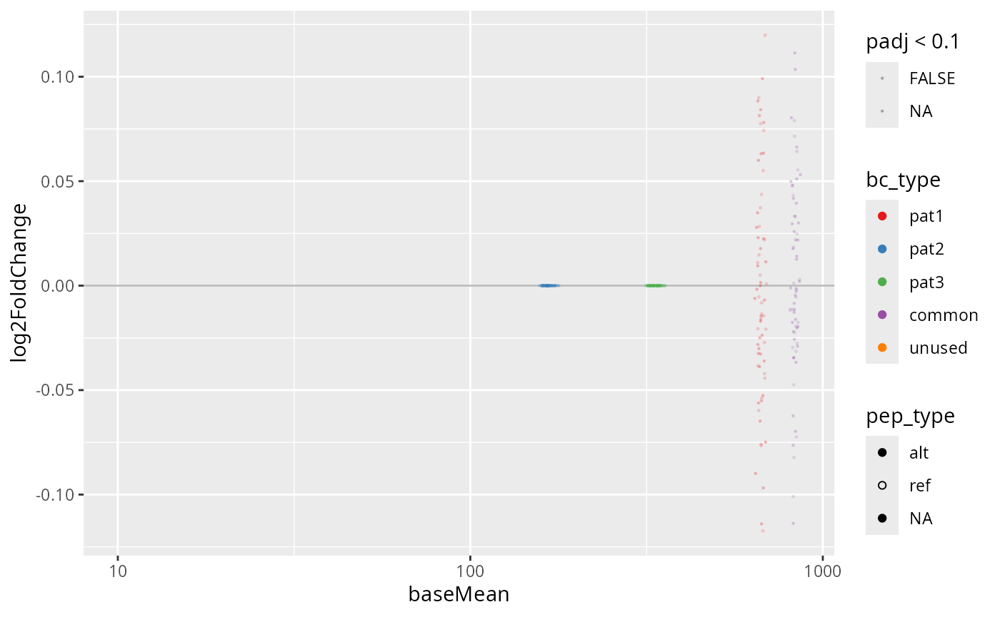

#> Rows: 17214 Columns: 1
#> ── Column specification ────────────────────────────────────────────────────────
#> Delimiter: "\t"
#> chr (1): X1
#>
#> ℹ Use `spec()` to retrieve the full column specification for this data.
#> ℹ Specify the column types or set `show_col_types = FALSE` to quiet this message.
#> Joining with `by = join_by(sample_id)`
#> Joining with `by = join_by(barcode)`Calculating differential abundance
res = screen_calc(dset, list(c("Sample", "Mock")))
#> converting counts to integer mode
#> Warning in DESeq2::DESeqDataSet(dset, ~rep + origin): some variables in design
#> formula are characters, converting to factors
#> the design formula contains one or more numeric variables with integer values,
#> specifying a model with increasing fold change for higher values.
#> did you mean for this to be a factor? if so, first convert
#> this variable to a factor using the factor() function
#> using pre-existing size factors
#> estimating dispersions
#> gene-wise dispersion estimates
#> mean-dispersion relationship
#> -- note: fitType='parametric', but the dispersion trend was not well captured by the
#> function: y = a/x + b, and a local regression fit was automatically substituted.
#> specify fitType='local' or 'mean' to avoid this message next time.
#> final dispersion estimates
#> fitting model and testing
#> Joining with `by = join_by(barcode)`
res
#> $`Sample vs Mock`
#> # A tibble: 17,214 × 19
#> barcode baseMean log2FoldChange lfcSE stat pvalue padj bc_type var_id
#> <chr> <dbl> <dbl> <dbl> <dbl> <dbl> <dbl> <fct> <chr>
#> 1 AACAAGACATCG 670. -0.114 0.286 -0.398 0.691 1 pat1 chr7:…
#> 2 AACAACGCTAAC 644. -0.0899 0.228 -0.394 0.693 1 pat1 chr7:…
#> 3 AACACACGATCA 676. -0.117 0.304 -0.386 0.700 1 pat1 BCR--…
#> 4 AACAACAACACC 686. 0.120 0.336 0.356 0.722 1 pat1 chr1:…
#> 5 AACAACTGCTCT 654. 0.0884 0.248 0.356 0.722 1 pat1 chr7:…
#> 6 AACAACCATCCA 658. 0.0899 0.257 0.349 0.727 1 pat1 chr4:…
#> 7 AACACAAGAAGC 674. 0.0991 0.298 0.333 0.739 1 pat1 chr15…
#> 8 AACAACGGTGAT 678. -0.0968 0.308 -0.314 0.753 1 pat1 chr7:…
#> 9 AACAAGGTAAGG 661. 0.0814 0.263 0.310 0.757 1 pat1 chr7:…
#> 10 AACACCAGCCTT 666. 0.0842 0.277 0.304 0.761 1 pat1 ETV6-…
#> # ℹ 17,204 more rows
#> # ℹ 10 more variables: mut_id <chr>, pep_id <chr>, pep_type <chr>,
#> # gene_name <chr>, gene_id <chr>, tx_id <chr>, tiled <chr>, n_tiles <dbl>,
#> # nt <dbl>, peptide <chr>Plotting the screen results
plot_screen(res$`Sample vs Mock`, "pat1")
#> Joining with `by = join_by(mut_id)`
#> Warning in scale_x_log10(limits = c(10, NA)): log-10
#> transformation introduced infinite values.
#> Warning: Removed 16946 rows containing missing values or values outside the scale range
#> (`geom_point()`).